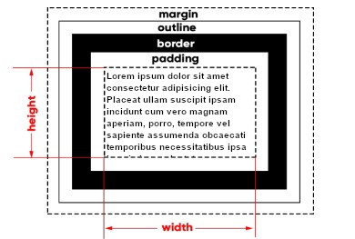
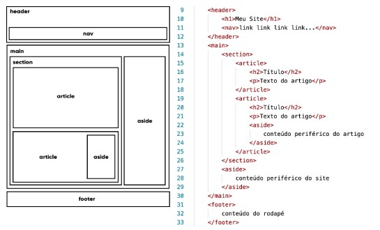
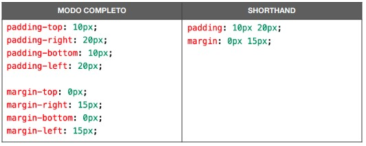

O HTML é responsável pelo esqueleto de um documento e seu conteúdo e as CSS pela harmonização e padronizição dos mesmos. O HTML e o CSS capazes estabelecerem comandos para o navegador através das tags e seletores, dessa forma, posso ditar meu conteúdo para ter um modelo inicial, como por exemplo, a tag <h1> para um título, ou a tag <p> para um parágrafo, porém, esse breve modelo dado pelas tags e seletores iniciais fazem com que o meu conteúdo fique solto na interface web. A solução desse problema é justamente arrumá-los dentro de caixas
As caixas são um conjunto aplicável na linguaguem HTML e CSS que facilitam a organização das partes do site. Tudo aquilo que é exibido, é considerado como uma caixa, podendo até estar dentro uma das outras, fazendo um ANINHAMENTO de caixas.
Tudo começa a partir do conteúdo (content). Todo conteúdo possui uma largura (width) e uma altura (height) e a esse conjunto de propriedades, damos o nome de box-size (tamanho da caixa). 
Depois do conteúdo e de seu tamanho, temos a borda (border) que fica em volta dele. Ela pode ter uma espessura, uma cor e um formato, sendo determinados através da CSS.
Entre a borda e o conteúdo - da borda para dentro - temos o preenchimento (padding) - da borda para fora - temos a margem (margin).
Entre a margem e a borda, podemos determinar o contorno (outline). Ele é um traçado visual que podemos criar fora da borda e o cálculo da sua espessura faz parte da margem estabelecida.
Dependendo do comportamento da caixa, podemos classificar um elemento em uma de duas categorias: block-level e inline-level
Um elemento dito block-level sempre vai se iniciar em uma nova linha e vai ocupar a largura total do elemento onde ele está contido. Se não estiver contido em nenhuma outra caixa, ele vai ocupar 100% da largura do <body>. O elemento block-level mais conhecido é o <div> e suas variações semânticas modernas da HTML5, como <main>, <section>, <aside>, etc.
Um elemento do tipo inline-level não vai começar em uma nova linha, e sim no ponto exato onde foram definidos. E a largura dele vai ocupar apenas o tamanho relativo ao seu conteúdo.
Com a atualização do HTML4 para o HTML5, veio as tags SEMÂNTICAS, como visto nas aulas anteriores. Essa semântica se aplica também no aninhamento das caixas no documento HTML.
A partir desses conhecimentos, a elaboração de um site começa a parecer mais simples, tendo um cabeçalho, um menu de navegação, um conteúdo principal, um rodapé ou até mesmo um conteúdo lateral que seja complementar com o conteúdo principal.
Tudo isso, pode ser agrupado dentro de caixas de maneira semântica ao invés de somente usar <div> com "id", temos então as marcações semânticas mais comuns para a demarcação de um site:
Tendo isso em mente, a organização do documento finaliza com algo semelhante:
As caixas contêm suas próprias propriedades que podem ser alteradas no CSS, como a altura (height) e largura (width), comumente demoninada de BOX-SIZE, o padding, border, outline, margin e além dessas, é possível criar um efeito de sombra, para dar a sensação de volume.
O preenchimento interno do conteúdo é configurado através do padding, essa propriedade segue uma ordem no sentido horário, na qual atribuimos valores ao:
padding-top: ; padding-right: ; padding-bottom: ; padding-left: ;
As margens são espaçamentos fora do conteúdo, um espaçamento atribuido à caixas externas, como por exemplo o <body>. A configuração de uma margem é feita através da propriedade margin que segue a ordem o sentido horário para os valores atribuidos:
margin-top: ; margin-right: ; margin-bottom: ; margin-left: ;
De maneira que os valores são atribuidos para cada sentido, para centralizar horizontalmente uma caixa, usa-se a propriedade margin: auto;
As propriedades de margem e preenchimento atribuidadas com um valor, equivale a todos os lados, atruibuindo dois valores, fazem com que o primeiro valor sera agregado em cima e em baixo e o segundo valor à direita e a esquerda.
A propriedade border é capaz de criar uma borda em um determinado conteúdo, os valores para essa propriedade devem seguir uma ordem específicas na qual devemos atribuir o tamanho, estilo e a cor, sendo representada por:
border-width: ; border-style: ; border-color: ;
As bordas apresentam alguns estilos como:
A propriedade outline cria uma borda externa do conteúdo, mesmo que haja uma borda interna, sua configuração segue a mesma ordem da border:
outline-width: ; outline-style: ; outline-color: ;
As bordas das caixas não precisam ser sempre retangulares e podem ter alguns detalhes especiais como vértices arredondados, usando a propriedade border-radius
A propriedade de uma border-radius segue também uma ordem específica, sendo o primeiro valor agregado a parte SUPERIOR ESQUERDA, o segundo valor a parte SUPERIOR DIREITA, o terceiro valor na parte INFERIOR DIREITA e o ultimo valor, agregado a parte INFERIOR ESQUERDA, fazendo quase o movimento HORÁRIO de um relógio.
Com isso, ao declarar a propriedade com SOMENTE um valor, o mesmo será equivalente a todas as bordas do conteúdo, por exemplo: border-radius: 50% fará com que o mesmo fique igual a uma bola, pois todos os arredondamentos ficam pela metade. Ao declarar com dois valores, o resultado seria igual a um X, atribuindo o valor inicial a SUPERIOR ESQUERDA e INFERIOR DIREITA e o segundo valor à SUPERIOR DIREITA e INFERIOR ESQUERDA.
É possível usar imagens como uma borda através da propriedade border-image. Essa propriedade funciona OBRIGATÓRIAMENTE depois da propriedade border e seus valores, após a atribuição, é possível fazer a alteração do border image na seguinte ordem:
border-image-source: url (''); border-image-slice: ; border-image-repeat: ;
assim que adicionamos a propriedade box-shadow no documento CSS, a propriedade segue sempre uma ordem específica, sendo:
As sombras é um efeito um tanto quanto perigoso no seu manuseio, pois se exagerada, gera um visual muito pesado, além da limitação de cor, já que uma SOMBRA é a ausência de luz em um determinado local, ou seja, não existe sombra VERMELHA (existe excessão, caso o cliente queira um site vermelho). Neste caso, para obeter um resultado agradável, use o RGBA, como foi mostrado no capitulo de cores, causando uma transparência na SOMBRA.
Por conta das propriedades seguirem uma certa ordem, isso torna possivel simplifica-las com shorthands:
A ordem para as duas configurações é sempre a mesma:
largura (-width), estilo (-style) e cor (-color).
A ordem para as duas configurações é sempre a mesma:
superior (-top), direita (-right), inferior (-bottom), esquerda (-left).
Até mesmo quando temos dois valores
